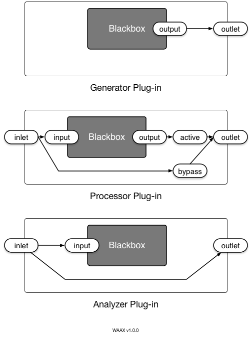
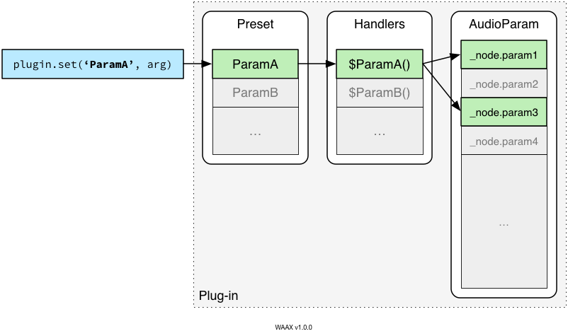

If you are not familiar with the concept of plug-in in music production, I recommend you to read these resources first.
WAAX currently defines 3 types of plug-in: Generator, Process and Analyzer. They have different configuration in terms of the internal audio routing. Note that the encapsulation is made possible by a predefined set of gain nodes. The following diagrams show how internal nodes are connected.

The examples of each plug-in type are:
Blackboxes above are to be filled in by a developer. All other stuffs - preset/parameter management, two-way binding, standardized input/output and more - will be managed by WAAX.
Before writing a plug-in, it is useful to understand how the parameter handler works. A WAAX plug-in has its own parameter layer and it is designed to abstract AudioParam object.
When you define a parameter in a plug-in, you are required to write a handler for the parameter. Once it is set up, changing the parameter value automatically triggers the corresponding handler to perform scaling and mapping. Note that WAAX parameter can support 'one-to-many' mapping scheme.

With this mechanism, you can have an abstract preset (a collection of WAAX parameters) which can be mapped into multiple AudioParam instances in a flexible fashion.
The handler is a quite powerful tool especially when you want to use MUI elements (i.e. knobs, sliders and etc.) for parameter control. You can get two-way binding between a parameter and a GUI element with a single line of code. (See the article on MUI for detail.)
This section shows the anatomy of plug-in building procedure. Before jumping right into the code example, here is the summary of each step:
It might be too much to digest at a glance, but it is nothing more than defining a JavaScript class.
(function (WX) {
// Plug-in constructor (Step 2)
function MyPlugin(preset) {}
// Prototype (Step 3)
MyPlugin.prototype = {};
// Define plug-in type (Step 4)
WX.Plugin.extendPrototype(MyPlugin, 'Processor');
// Register plug-in into WX namespace (Step 4)
WX.Plugin.register(MyPlugin);
})(WX);
The above snippet is a fundamental scaffolding of WAAX plug-in. For the safe encapsulation, Using IIFE is strongly recommended. Other than that, it is a plain JavaScript class definition. For the next step, the constructor needs to be filled in.
function MyPlugin(preset) {
// 1. define plug-in type
WX.Plugin.defineType(this, 'Processor');
// 2. create and patch native nodes
this._input.to(this._output);
// 3. define WAAX parameters
WX.defineParams(this, {
sweet: {
type: 'Boolean', default: false
},
});
// 4. initialize preset
WX.Plugin.initPreset(this, preset);
}
Among the steps shown above, 1, 3 and 4 are mandatory for the plug-in to run properly. The most important thing is the step 1 because it creates the internal routing so you can input or output sound. In the current version (1.0.0), you can choose one plug-in type from Generator, Processor and Analyzer.
Step 3 is to define WAAX parameters and note that you need to define the corresponding handler in the prototype.
MyPlugin.prototype = {
// 1: plug-in info
info: {
name: 'MyPlugin',
api_version: '1.0.0-alpha2',
plugin_version: '1.0.0',
author: 'Hongchan Choi',
type: 'Processor',
description: 'Dummy Plug-in'
},
// 2: default preset
defaultPreset: {
sweet: false
},
// 3: define handlers
$sweet: function (value, time, xtype) {
// do something when parameter 'sweet' changed
}
};
A plug-in prototype is consist of plug-in information, default preset and handlers: filling the info and default preset should be straightforward. Writing handlers is not difficult if you have a solid idea on how to scale and map parameters.
The detail on parameter definition and writing handler is covered in this article.
WX.Plugin.extendPrototype(MyPlugin, 'Processor');
WX.Plugin.register(MyPlugin);
Just copy and paste two lines above and replace the constructor name and the plug-in type accordingly.
Load your plug-in script file after WAAX core library. Then you can use it under WX namespace.
<script src="waax.js"></script>
<script src="MyPlugin.js"></script>
<script>
var myplugin = WX.MyPlugin({ sweet: 1.0 });
myplugin.to(WX.Master);
</script>
Copyright (c) 2012-2014 Hongchan Choi. All rights reserved.